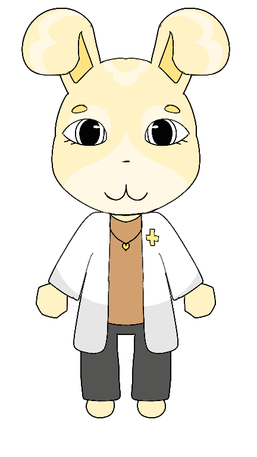

Character Database

| Espécie | Coelha |
| Gênero | Feminino |
| Pronomes | Ela/Dela (She/Her) |
| Cargo | Médica Responsável pelo Andar 2 |
| Status | Viva |
| Primeira Aparição | Turno 5 |
| Local | Andar 2 |
A Dra. White é uma coelha de pelagem amarelo pastel (tom banana). Usa um jaleco branco com um símbolo médico no peito, uma máscara médica branca, blusa marrom clara e calças escuras. O interior dourado das orelhas complementa sua aparência profissional e amigável.
A Dra. White é uma das médicas mais importantes do hospital. Sua principal responsabilidade é cuidar dos pacientes do segundo andar e supervisionar o crescimento do hospital. A cada quinze turnos, libera uma nova expansão, permitindo que o hospital atenda mais pacientes e realize procedimentos mais avançados. Ela também é mãe de Tommy White, que ocasionalmente visita o hospital para encontrá-la.